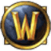

SHEET 65 · ADDONS + COACH
v2 · 22 Oct, late · icons on every name, and a coach report you can read in five seconds
Two things: your addon updates in the morning brief, now with each addon's own icon, and the rotation coach, rebuilt from scratch to be simple. You ask Aang; Aang answers in one line; the line opens a short page of tips in Samara. There is no ask box on that page: you keep asking Aang.
Every software name carries its iconEvery site carries its bookmark iconOne place to chat: AangReports open in Samara
WHAT TO PICK Addons: A all ticked, or B safe ones ticked (my pick)? · Coach: is this simple enough?
1ADDONS IN THE MORNING BRIEF
A new Addons slip under Today. Each row: tick, the addon's own icon, name, old → new, one short line, and a warning tag when there is one (now in plain readable words). Aang only does this with

WoW closed.
1What starts ticked
A: every update ticked. B: risky ones start unticked (Big jump, Not for this patch). Errors stay ticked: the update is often the fix.
BSAFE ONES TICKED I'D PICK THIS
→After "Update ticked"
Aang drives CurseForge (minimized), checks each one really changed, then says one line. Every name in it carries its icon.
2ROTATION COACH, SIMPLE
Your note: "I genuinely don't know what I'm reading." Fair: v1 was a dashboard. Now it reads like a friend's text. One headline for the fight. Two tips, each a plain sentence with the ability's icon and one number at most. One nice line. One line saying if you did better than last time. No chart, no table, no game jargon.
→You ask Aang, he answers in one line
YOU, IN THE TYPING BOXhow was my rotation on that last boss?
1AANG · THE LINK OPENS THE TIPS IN SAMARA
2The tips, in SamaraFights from that night down the left (click one to see its tips). Your toons top right, each with its class crest. Nothing else on the page.
✦BUJUJU · ARMS WARRIOR · GARR
→Your other toonClick Derek Sheppard: his own fights and tips. Nothing is shared between toons.
✦DEREK SHEPPARD · EXAMPLE SPEC
?THE RULES IT FOLLOWS
HeadlineThe boss and one word on how it went, then how many easy wins there are. That's the whole verdict.
TipsTwo, three at most. One plain sentence each, said the way you'd say it to a friend, with the ability's icon and at most one number.
Words it never usesUptime, debuff, proc, window, DPS, rotation priority, or any table of numbers.
Better than last timeOne line, green with an up arrow, only when it's true. Worse is never shouted; it just stays off.
QuestionsAsk Aang, anywhere you already talk to him. The page has no chat of its own.
Where the tips come fromThe guide named at the bottom, with its site's bookmark icon.
- Real today: your 17 addon names and versions, and BugGrabber errors from RestedXP Guide, BlizzMove, Auctionator and Details. The addon icons are CurseForge's own (read from its local cache, nothing downloaded); CurseForge's and WoW's are from their programs on this PC.
- Stand-ins: the ability icons and class crests are hand-drawn pixel art (the real page would use the game's own icons). Warcraft Tavern's bookmark icon is a placeholder WT monogram: Samara has not saved it yet; it fills in after one visit.
- Made up for the picture: the new versions, the "what changed" lines, every fight and tip. Derek's spec is a guess; the real one comes from the log.